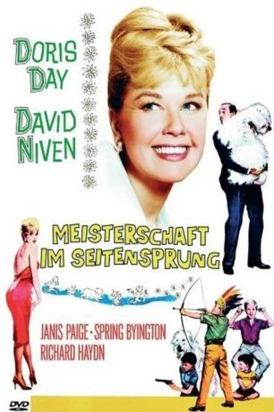

#3621 Meisterschaft im Seitensprung
Alternativ: Please Don't Eat the Daisies
 
 IMDB-Wertung: 6.5 / 10
IMDB-Wertung: 6.5 / 10  Metascore: 0
Metascore: 0 
Die Ehe zwischen Lawrence Mackay (David Niven), ein gefürchteter New Yorker Theaterkritiker, und seiner Frau Kate (Doris Day) ist gleichermaßen mustergültig wie ereignislos. Als Lawrence immer erfolgreicher wird und die platonische Freundschaft zu einer rassigen Schauspielerin in Kates Augen immer gefährlicher wird, überredet sie ihren Mann, zusammen mit ihr und den vier Söhnen in eine idyllische Vorstadt-Gemeinde zu ziehen, um alles wieder ins Lot zu bringen. Die Kinder blühen auf und Kate engagiert sich in der Gemeinde als Leiterin des örtlichen Laien-Theaters. Doch der wesentlich längere Weg zur Arbeit, die Beanspruchung durch die High Society und die dadurch fehlende Zeit für Familie und Entspannung belasten auf lange Sicht das Familienidyll. Eine unterlassene Absprache zwischen Lawrence und Kate bezüglich eines von ihm geschriebenen Theaterstücks bringt die Situation zum überkochen...
Jahr: 1960
Dauer: 110 Minuten
FSK: 6
Land: USA Studio: MGMTonspuren: DD5.1 - ,
Untertitel: Englisch, Deutsch, , ,
Auflösung: 720p (1280x528) Größe: 2949 MB
Genre: Komödie, Familie, Liebe
Regisseur: Charles Walters
Drehbuch: James Bruner
Soundtrack:
Darsteller:
 Doris Day als Kate Robinson Mackay
Doris Day als Kate Robinson Mackay David Niven als Laurence Mackay
David Niven als Laurence Mackay- Janis Paige als Deborah Vaughn
- Spring Byington als Suzie Robinson
 Richard Haydn als Alfred North
Richard Haydn als Alfred North- Patsy Kelly als Maggie
 Jack Weston als Joe Positano
Jack Weston als Joe Positano- Margaret Lindsay als Mona James
- Carmen Phillips als Mary Smith
 Len Lesser als Waiter at Sardi's , uncredited
Len Lesser als Waiter at Sardi's , uncredited- Benny Rubin als Pete , uncredited
 Frank Wilcox als TV Interviewer , uncredited
Frank Wilcox als TV Interviewer , uncredited- John Harding als Reverend Norman McQuarry
- Mary Patton als Mrs. Hunter
- Charles Herbert als David Mackay
- Stanley Livingston als Gabriel Mackay
- Flip Mark als George Mackay
- Baby Gellert als Adam Mackay
- Barbara Aberle als Guest , uncredited
- Eddie Baker als Sardi's Patron , uncredited
- Mary Benoit als Guest , uncredited
- Bobette Bentley als Student , uncredited
- Dan Bergin als Man Hit with Water Balloon , uncredited
 Gail Bonney als Miss Bonney , uncredited
Gail Bonney als Miss Bonney , uncredited- Lovyss Bradley als Maid , uncredited
- John Brennan als Young Man , uncredited
- Ella Mae Brown als Browser , uncredited
- Jhean Burton als Actress , uncredited
- Lorraine Caldwell als Guest , uncredited
- Kathryn Card als Mrs. Yule , uncredited
- Jack Chefe als Sardi's Headwaiter , uncredited
- Richard Collier als Fabric Salesman , uncredited
- Joseph Cronin als Pianist , uncredited
- Oliver Cross als Party Guest , uncredited
- Lucille Curtis als Guest , uncredited
- Robert Darwin als Minor Role , uncredited
- Frank Delfino als Minor Role , uncredited
- Burt Douglas als Young Man , uncredited
- Amy Douglass als Martha , uncredited
- Joan Dupuis als Minor Role , uncredited
- David Duval als Minor Role , uncredited
- Estelle Etterre als Guest , uncredited
 Duke Fishman als Browser , uncredited
Duke Fishman als Browser , uncredited Bess Flowers als Elevator Passenger , uncredited
Bess Flowers als Elevator Passenger , uncredited- Donald Foster als Justin Withers , uncredited
 Milton Frome als Gus , uncredited
Milton Frome als Gus , uncredited- Marianne Gaba als Young Girl , uncredited
- Frank Gardner als Student , uncredited
- Kenneth Gibson als Sardi's Patron , uncredited
 James Gonzalez als Actor in Play , uncredited
James Gonzalez als Actor in Play , uncredited
Datei: X:\1960\Meisterschaft im Seitensprung (1960, FSK6, 1280x528).mkv seit 10.05.2016
Festplatte: HD 1900-1970
 Es gibt insgesamt 21 Filme in der Gruppe '1960'
Es gibt insgesamt 21 Filme in der Gruppe '1960'